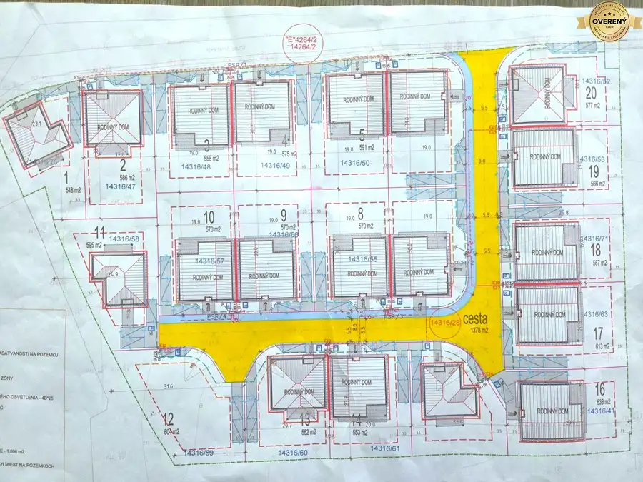
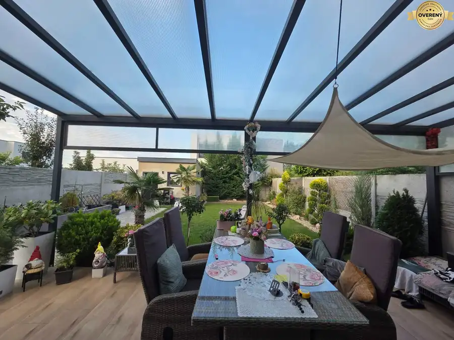

Stavebné pozemky na predaj v obci Láb.
Láb
- Plocha554 m²
- Poschodie0.
- Vlastníctvoosobné
O nehnuteľnosti
Ponúkame na predaj stavebné pozemky na okraji obce Láb.
Projekt Pri Potoku ponúka 22 stavebných pozemkov s možnosťou kúpy samostatného stavebného pozemku alebo kúpy stavebného pozemku s projektom 3 – 4 alebo 5 izbového rodinného domu.
Na každom pozemku sa nachádzajú všetky inžinierske siete okrem plynu, plus optický internet.
Vybudovaná asfaltová cesta s chodníkom a verejným osvetlením.
K pozemkom č.3 – č. 5 – č.16 – č.17 – č.18 – č.19 ktoré sú pripravené na výstavbu 5.izbových rodinných domov je už vystavené stavebné povolenie.
Pozemok : 554 m² cena pozemku - 137 518€ cena pozemku + projekt - 142 518€ cena pozemku + projekt + stavebné povolenie - 148 718€
Pozemok : 626 m² cena pozemku - 141 110€ cena pozemku + projekt - 146 110€
Rozloha pozemkov:
503 m², 532 m², 554 m², 575 m², 568 m², 522 m², 522 m², 497 m², 473 m², 455 m², 522 m², 558 m², 551 m², 544 m², 626 m², 580 m², 443 m², 535 m², 572 m², 572 m², 522 m², 522 m²
Pre viac informácií ma neváhajte kontaktovať:
Jana Kučeravá ,
V cene je zahrnutá provízia pre RK ktorá pre vás zabezpečuje kompletný právny servis a to: ( Marketing a Reklama na všetkých webových portáloch, vypracovanie Rezervačnej zmluvy, Kúpne zmluvy, Návrh na vklad s poplatkom).
Finančné poradenstvo ( Hypotekárny úver a dofinancovanie, ktoré vám vieme ušiť na mieru podľa vašich predstáv ).
Naša realitná kancelária MK - REAL so sídlom Malacky je na trhu už 21 rokov. S našimi dlhoročnými skúsenosťami vás prevedieme týmto procesom spoľahlivo a bezpečne.
Parametre
| Rozloha pozemku | 554 m² |
|---|---|
| Poschodie | prízemie |
| Vlastníctvo | osobné |
| Voda | verejný vodovod |
| El. napätie | 230/400V |
| Plyn | nie |
| Kanalizácia | áno |
| Internet | optika |
| Inžinierske siete | áno |
| Terén | rovina |
| Prístupová cesta | asfaltová cesta |
| Pripravené na výstavbu | vydané stavebné povolenie |
| Dátum zverejnenia | 8. 6. 2026 |
Kde to je
Mohlo by Vás zaujímať

Pozemok3 86 130 €Stavebný pozemok na predaj - Studienka. Studienka 638 m² Ponúkame vám jedinečnú príležitosť získať stavebný pozemok pre výstavbu rodinného domu podľa vlastných predstáv vo veľmi peknej časti obce Studienka…
Rodinné domy10 299 990 €Rodinný dom na predaj - Kostolište Kostolište 4-izbový147.5 m² Vo výhradnom zastúpení majiteľa ponúkame na predaj komplet zariadený rodinný dom v zastavanej časti obce Kostolište / Alej Martina Benku. 4- izbový…